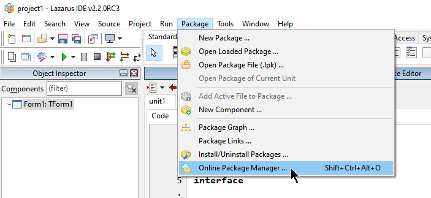
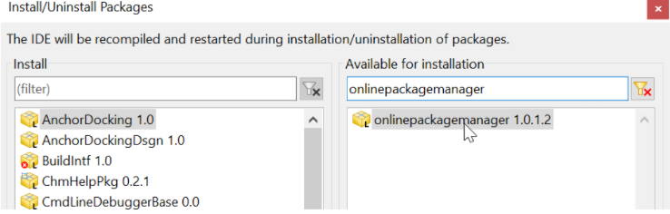

Online Package Manager (OPM/GPO)
Em algumas instalações do Lazarus, o ‘Online Package Manager’ (OPM ou GPO em português) já vem pré-instalado. No entanto, em versões compiladas através do fpcupdeluxe, ele geralmente não está presente. Como vamos precisar dele, verifique primeiro se a opção aparece no menu: Package | Online Package Manager.

Se a opção já existe no seu sistema, você pode ignorar as instruções abaixo. Caso contrário, é altamente recomendado instalá-lo. Para isso, acesse o menu Packages | Install/Uninstall packages (Instalar/desinstalar pacotes) e selecione os pacotes necessários para a instalação.

Após selecionar e adicionar os pacotes indicados, clique no botão “Salvar e reconstruir IDE” para aplicar as mudanças e reiniciar o ambiente.